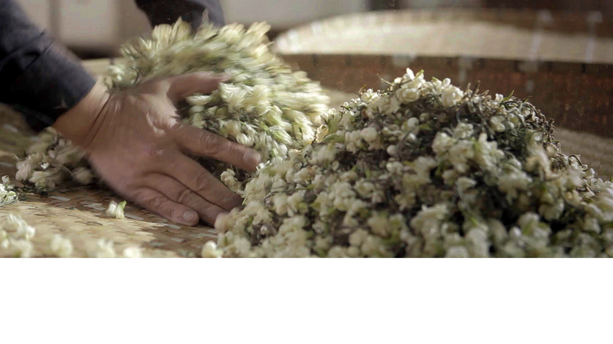

核心工艺
茉莉花茶并非简单把茶与茉莉花混合吸香而成，如果通花错过时间会导致闷味，花渣未起好会导致馊味，
窨制不好会导致透兰和透素。所以，窨制时对温度、湿度、下花的时机等都要严格把握，差之毫厘便失之千里。
茉莉花茶
非物质文化遗产项目
福州茉莉花茶窨制技艺传承人
茉莉花茶并非简单把茶与茉莉花混合吸香而成，如果通花错过时间会导致闷味，花渣未起好会导致馊味，
窨制不好会导致透兰和透素。所以，窨制时对温度、湿度、下花的时机等都要严格把握，差之毫厘便失之千里。
“‘以史为鉴，可以溯渊源；以史明志，可以创未来’。
福州茉莉花茶是福州的特色文化，是一代代制茶艺人精益求精的结果。
这块金字招牌我们不仅要传承，更要创新和提高，
这是我们制茶人的责任和义务。”